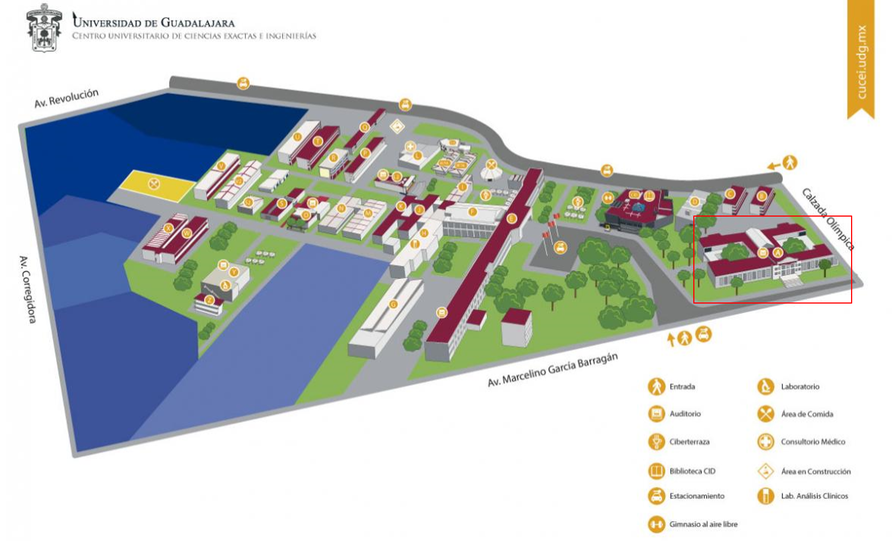

Ubicación

Proceso de egreso
Pasos para titulación desde que terminas créditos
1. Verificar que aparezcan la totalidad de los créditos en el Kardex ajustados en sus áreas correspondientes.En caso de no tenerlos, solicitar en Coordinación el Ajuste de Créditos de Optativas Abiertas y Especializantes Selectivas
2. Solicitar el Cambio de Estatus de ACTIVO a EGRESADO en la coordinación.
3. Una vez reflejado el cambio de estatus, seleccionar la modalidad de Titulación que más se se adapte a tu perfil académico y presenta los documentos necesarios en la Coordinación.
Al optar por la modalidad de titulación (directa): Excelencia, promedio y diseño de equipo (ganador proyecto modular).
Esperar la Evaluación en la próxima sesión del Comité de Titulación:
Modalidad de titulación por Examen Global Teórico:
Esperar la Evaluación en la próxima sesión del Comité de Titulación (Solo en caso de pasar el examen):
Modalidades de Titulación: Guías comentadas, Diseño de Equipo, Seminario de Investigación, Tesis, Informe de Practicas Profesionales.
Esperar la Evaluación en la próxima sesión del Comité de Titulación (Solo en caso de pasar el examen):
De tener un dictamen no aprobatorio, atender las observaciones y esperar la próxima sesión.